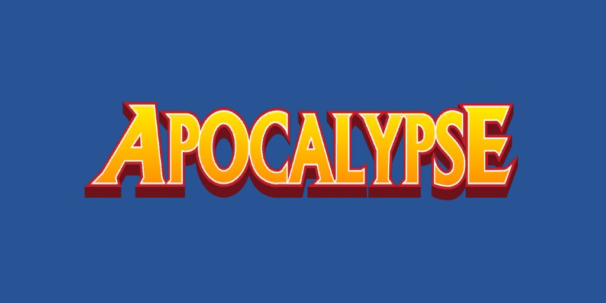
Apocalypse (En Sabah Nur) (Terre-616)
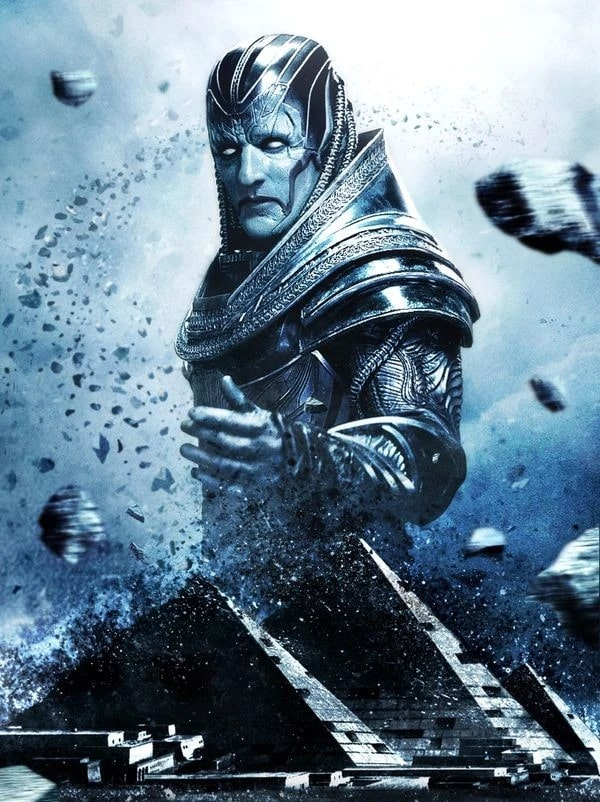
Origines :
Le futur Apocalypse voit le jour au XXXe siècle av.
J.-C. en Ancienne Égypte, près d'Akkaba, un village des environs de la vallée des Rois.
Né laid et difforme, il est abandonné dans le désert puis recueilli par Baal des Sables Pourpres, le chef d'une horde nomade.
Celui-ci sent le potentiel de l'enfant et veut en faire un dieu.
Il le nomme En Sabah Nur (« le Premier », «la lumière du matin» en arabe).
En Sabah Nur apprend vite les règles de la tribu : vivre ou mourir.
C'est ainsi qu'il adopta cette philosophie spencérienne.
Alors qu'il est âgé de 17 ans, l'armée du général Ozymandias attaque le campement.
Baal et En Sabah sont les seuls à survivre. Ils se réfugient dans une grotte, mais Baal sera écrasé par des rochers. En Sabah retourne à la surface mais est capturé et fait esclave.
Il est présenté devant le pharaon Rama-Tut (un variant de Kang) et refuse de le servir.
Rama-tut lui tire dessus, avec une arme futuriste. Laissé à l'agonie dans le désert, En Sabah découvre ses pouvoirs mutants.
Il prend le contrôle de l'empire dès que Rama-tut s'échappe dans le temps.
Pendant plusieurs siècles, il voyage dans le monde (en Inde, en Grèce et même en Amérique du Sud), où il est vénéré comme un dieu par plusieurs nations.
Des siècles plus tard, il découvre un vaisseau extraterrestre écrasé dans une plaine de Mongolie.
Le vaisseau était une création des Célestes, et était gardé par l'Externel Saul.
Apocalypse le défie et réussit à entrer dans le vaisseau. À l'intérieur, son génome est transformé et amélioré par les machines des Célestes.
À cette époque, il est alors l'être le plus puissant du monde.
C'est à cette période qu'il rencontra Cable pour la première fois.
Il ne connaissait pas le voyageur venu d'un lointain futur, mais ce dernier savait ce qu'il ferait dans quelques milliers d'années.
Cable lui fait sauter la tête d'un coup de pistolet, pensant avoir anéanti la menace future.
Mais Ozymandias emmène le corps du tyran dans le vaisseau des Célestes pour lui permettre de revenir à la vie.
Au cours des troisièmes croisades au XIIe siècle, il rencontra le croisé Paris Du Bennett, et réveille son gène mutant.
Se montrant assez fort, Paris est téléporté par Nur sur son vaisseau et transformé en Exodus.
Après avoir capturé Circé et le Chevalier Noir qui voyageaient dans le temps, Nur ordonna à Exodus de le détruire.
Exodus a refusé et s'est retourné contre Nur, le qualifiant de "faux dieu".
Bennett se rebelle contre son « maître » mais est vaincu. Il est alors placé en hibernation jusqu'à ce que Magnéto le découvre au XXe siècle.
Il passe le reste de son temps en animation suspendue.
Il se réveille une fois, en Angleterre, où il rencontra Nathaniel Essex, qu'il transforme en Mister Sinistre.
Mais Essex se rebelle et parvient à l'empoisonner, le forçant à retourner à son état d'hibernation.
En 1459, à l'aide de quatre cavaliers, il assemble une armée pour s'emparer du pays de Vlad Tepes (le futur Dracula), qu'il affronte en combat singulier.
Après une longue période d'hibernation, Apocalypse se réveille le jour où Cable arrive dans le présent, mais il reste caché.
Il connaît plusieurs conflits avec les premiers X-Men, connus alors sous le nom de Facteur-X, et il forme ses serviteurs: l'Alliance du Mal et les Cavaliers.
Quand Angel perd ses ailes, Apocalypse lui propose de lui en faire de nouvelles.
Warren accepte et devient Archangel, le cavalier de la Mort. Il se rebelle un peu plus tard et Facteur-X chasse Apocalypse. Ce dernier abandonne alors son vaisseau, qui servira de quartier général à l'équipe mutante.
Plus tard, Apocalypse infecte Nathan, le fils de Cyclope, avec un virus techno-organique dérivé de la technologie alien qui l'avait transformé dans le passé. Nathan est envoyé dans le futur pour être sauvé par les Askani, où il deviendra le guerrier Cable.
Apocalypse affronte encore une fois les X-Men, X-Force et Facteur-X, quand le clone de Cable, Stryfe voyage dans le présent pour assassiner le Professeur Xavier, en faisant accuser son modèle.
À la fin de l'aventure, sur sa base lunaire, les Dark Riders se retournent contre leur maître, qui est laissé pour mort par Archangel.
On ne sait pas comment il réussit à survivre, mais son pouvoir de robotisation semble en être la clef, car il s'équipe par la suite de puissantes armures de combat.
Quand Légion fait un bond dans le passé pour supprimer Magnéto, c'est Charles Xavier qui est tué, et tout le présent s'en trouve changé.
Son "futur père" mort, Légion cesse d'exister, et Jean Grey ne fut jamais possédée par le Phénix.
Apocalypse commence sa guerre de survie du plus fort 10 ans avant, et il réussit à s'emparer du monde et à dominer les humains à l'aide d'une armée d'Infinis, des soldats clonés, et de ses 4 Cavaliers.
La ville de New York devient l'île d'Apocalypse et sa statue remplace la Statue de la Liberté.
Ses principaux ennemis sont alors les résistants, les X-Men, menés par un Magnéto bien différent de celui de l'univers Marvel principal.
Parmi ces rebelles mutants, on retrouve Malicia (alors femme de Magneto), Wild Child, Dents de Sabre, Iceberg, Tornade, Bishop, Jean Grey, Husk, Chamber...
Apocalypse a même un fils, Holocauste, qui est une véritable machine de guerre.
À la fin de la guerre, le cristal M'Kraan, qui maintenait l'existence de cette réalité, est détruit, et l'Ère d'Apocalypse cesse d'exister, avec tout ce qu'elle contenait.
Seuls quelques individus survécurent, aspirés par la réalité de l'Univers Marvel "principal".
Parmi eux, on retrouve :
-Bishop, qui retrouve alors la réalité « normale » ;
-Holocauste, le fils d'Apocalypse;
-Nate Grey (un clone créé par Mister Sinistre à partir des ADN de Cyclope et Jean Grey ;
-Le Fauve Noir, atterrissant 20 ans avant les autres, et créant la communauté des Morlocks ;
-Le Confiseur, qui va installer son pouvoir sur Genosha ;
-Blink et Dents-de-Sabre, qui passent de réalité en réalité, avec les Exilés et Weapon X.


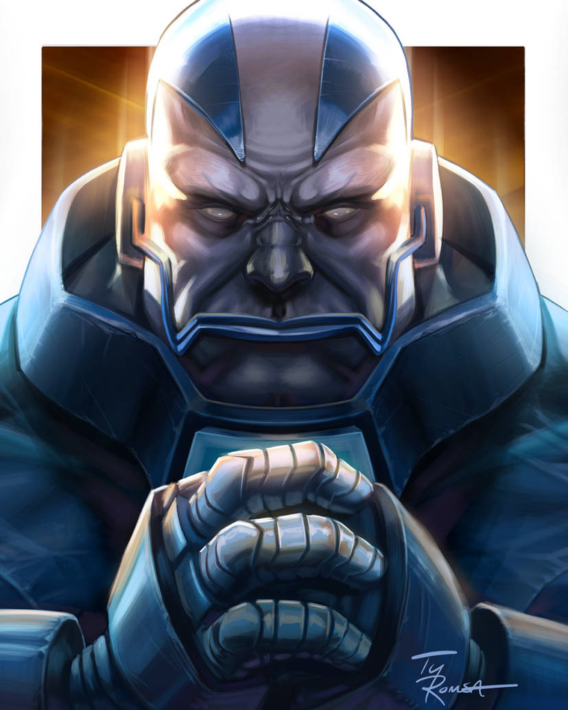
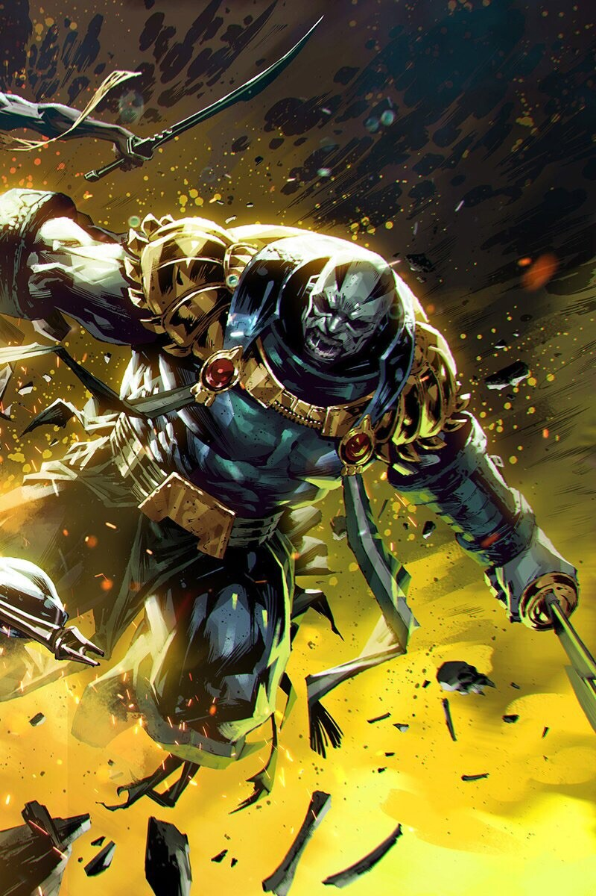
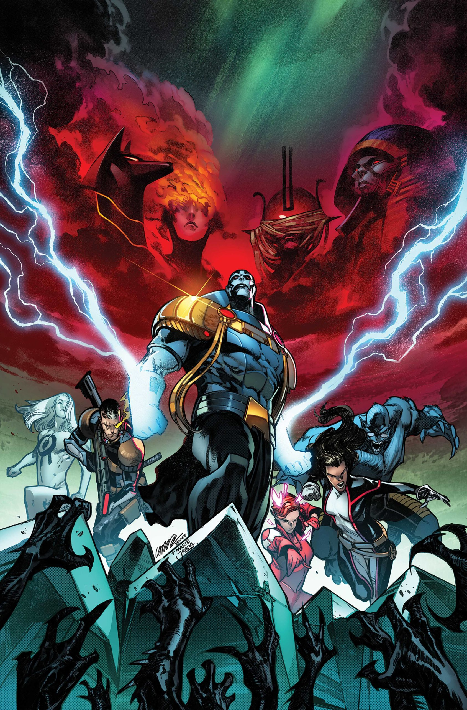
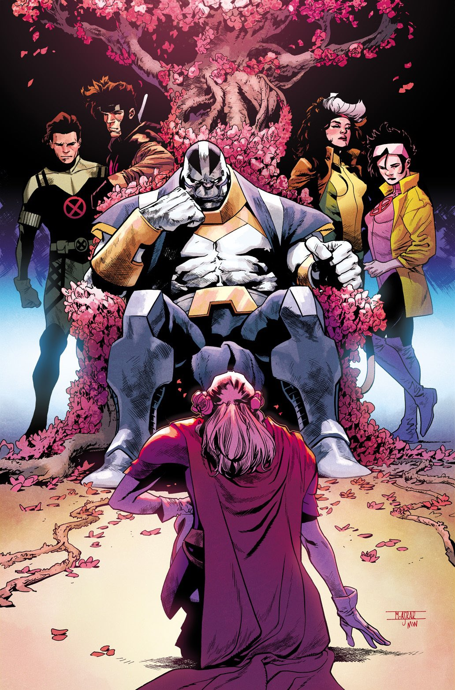
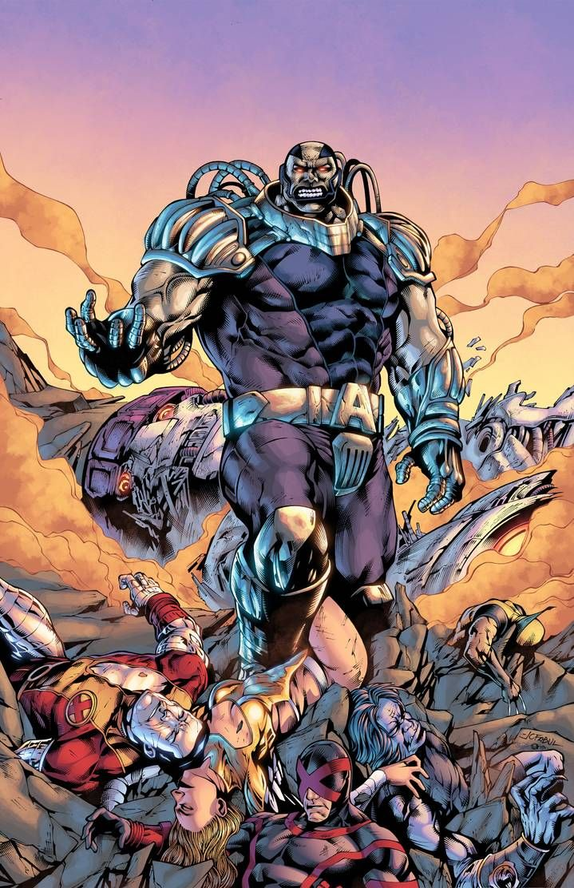
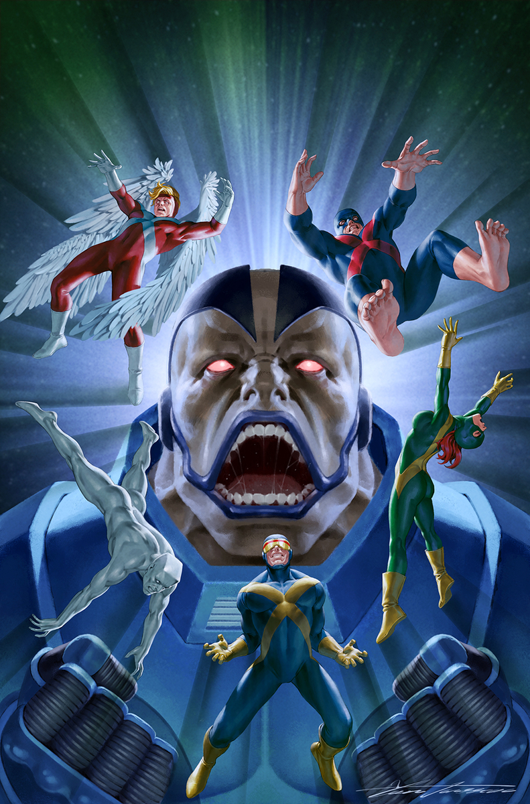
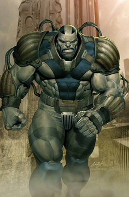
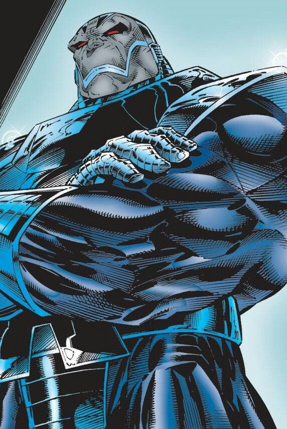
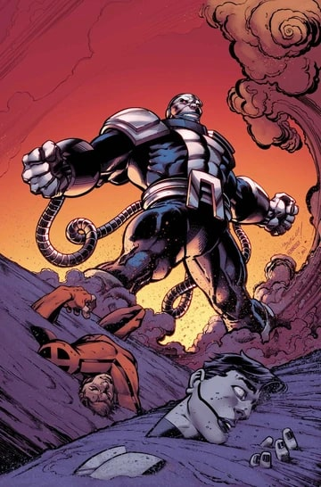
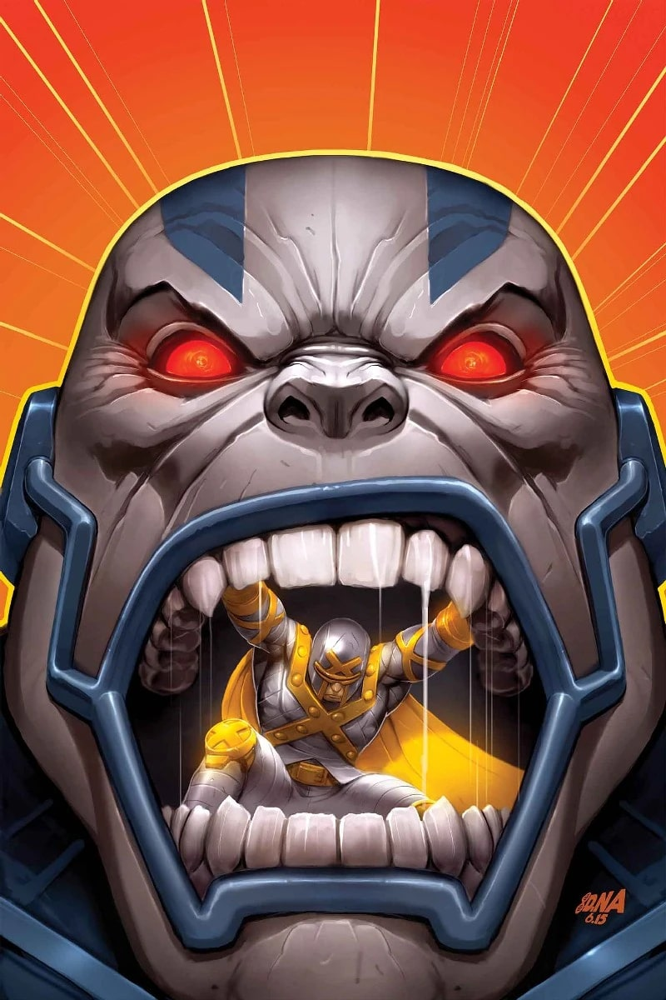
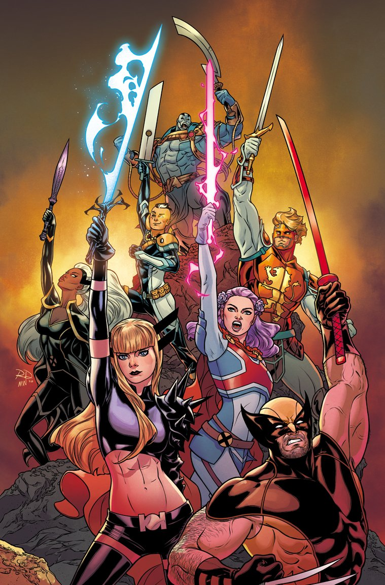
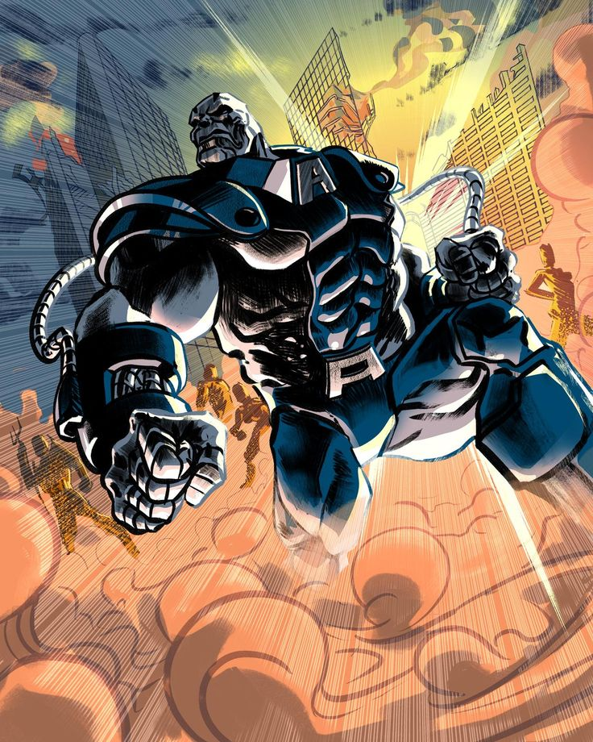
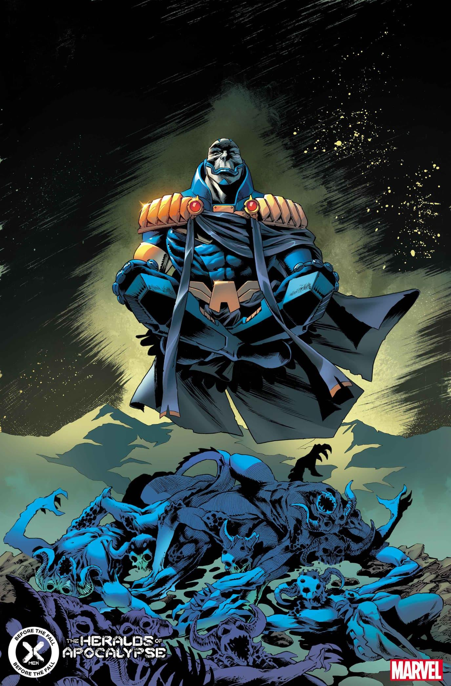
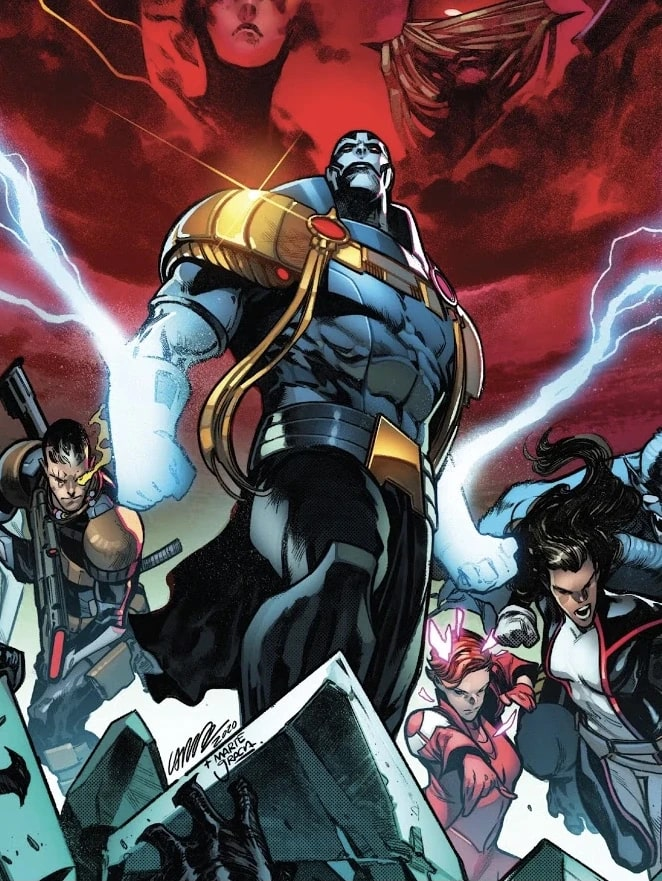
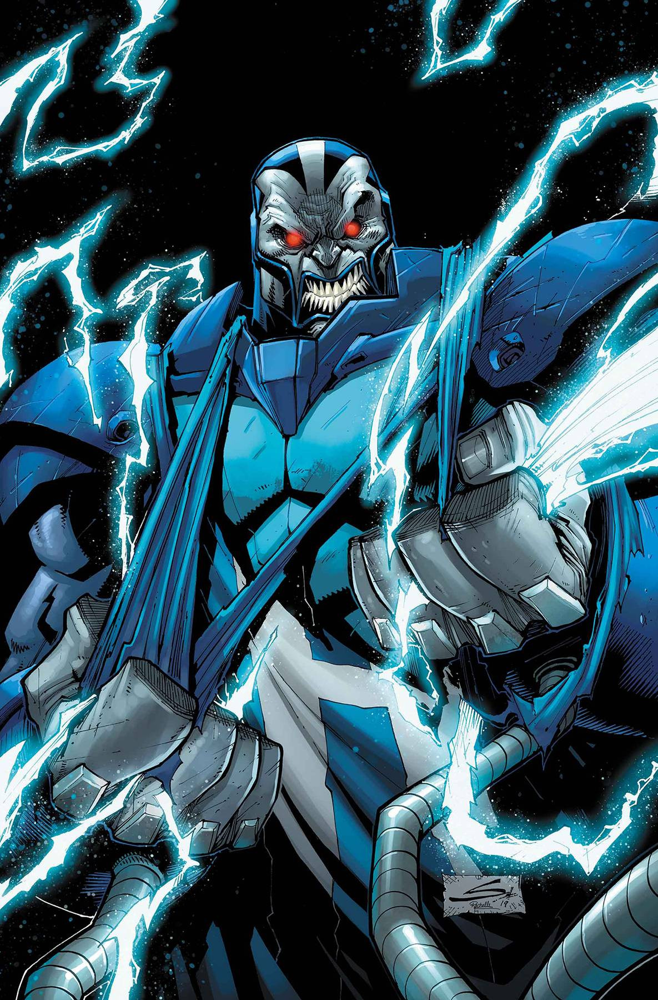
Capacités :
Lors de l’émergence de sa mutation, Apocalypse devint quasiment immortel, résistant aux ravages du temps et aux blessures.
Il peut altérer sa structure cellulaire grâce à la bio-armure qu'il porte en permanence.
Il peut également utiliser la télékinésie, ce qui lui permet de léviter.
Grâce à diverses technologies extraterrestres, Apocalypse a pu accroître les pouvoirs qu'il possédait déjà en tant que mutant, comme sa force et son endurance surhumaines.
S'il est grièvement blessé, il peut guérir en se plongeant dans un état comateux, où récupérer grâce aux machines extraterrestres de son vaisseau.
Il peut également projeter des rayons d'énergie, où se téléporter.

Apparence :
Apocalypse est un mutant à la peau grisâtre, très grand de taille.
Il porte une bio-armure en permanence, reliée à son corps par des tuyaux, l'alimentant.
Il porte également une ceinture avec une boucle représentant un « A ».
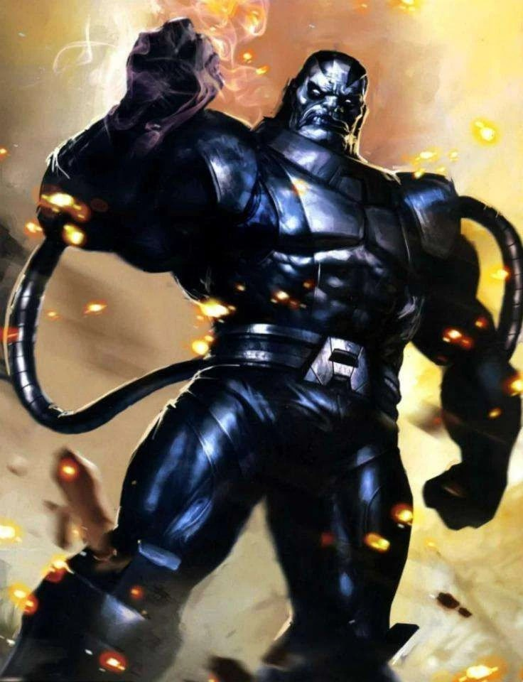